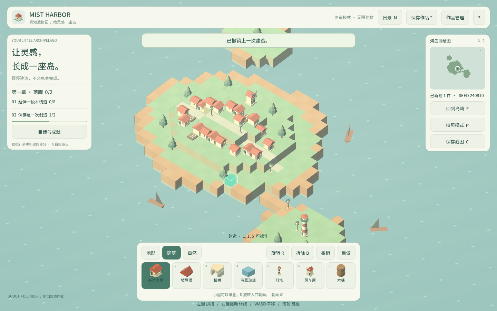
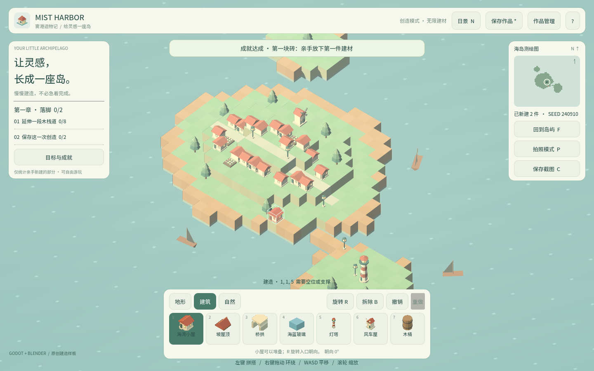

卷 4 · 第 20 章 撤销栈：一次点击，一个命令
本章目标：理解"记录前后状态"式撤销（而非"反向操作"式）——
为什么它不会出错、redo_stack为什么一改就清空、以及 160 步上限的意义。
对应任务：T18（撤销/重做） | 对应文件：world_model.gd的_record/undo/redo
20.1 命令的样子
undo_stack.append({
"cell": cell, # 作用的原点格
"before": before, # 操作前该格的内容（{} 表示原来为空）
"after": after, # 操作后该格的内容（{} 表示被删除）
})只有三个字段，却能表达全部操作：
| 操作 | before | after |
|---|---|---|
| --- | --- | --- |
| 放置 | {} | {kind:..., rot:...} |
| 拆除 | {kind:..., rot:...} | {} |
撤销 = 写回 before；重做 = 写回 after。 不需要知道"这个操作是放置还是拆除"。
20.2 两种撤销设计，为什么选这个
| 方案 | 做法 | 问题 |
|---|---|---|
| --- | --- | --- |
| 反向操作 | 记录"这是放置"，撤销时执行"删除" | 每加一种操作就要写对应的逆操作；逆操作写错 = 状态损坏 |
| ✅ 前后快照 | 记录 before / after 两份状态 | 撤销只是"写回旧值"，永远正确 |
本实训所有操作最终都落到 _set_raw(cell, value)——
写入一个格子。既然写入路径唯一，撤销就不需要"逆操作"，只需要"旧值"。
📌 判断标准：如果你的操作最终都收敛到少数几个"写入原语"，就用快照式撤销。
20.3 一次点击 = 一个命令
func _record(cell, before, after) -> void:
_set_raw(cell, after)
undo_stack.append({"cell": cell, "before": before, "after": after.duplicate()})
if undo_stack.size() > MAX_HISTORY:
undo_stack.pop_front()
redo_stack.clear() # ← 关键
_touch()redo_stack.clear() 的意义：一旦产生新操作，之前的"重做分支"就作废了——
这是所有撤销栈的标准语义（如同编辑器的行为）。
MAX_HISTORY = 160：
- 上限保护内存（每个命令含两个字典）
- 160 步足够覆盖一次建造会话
- 超限从头部丢弃最老的命令
20.4 _touch()：一次改动，三处联动
func _touch() -> void:
revision += 1 # ① 版本号 → 外界的"脏检查"
dirty = true # ② 是否有未保存改动（UI 显示 * ）
changed.emit() # ③ 通知渲染层重建| 字段 | 消费者 |
|---|---|
| --- | --- |
revision | 测试：断言"操作真的发生了"（第 11 章 QA 快照） |
dirty | UI 的保存按钮文案；浏览器验收断言 not state()["dirty"] |
changed | build_world.rebuild()（第 10 章） |
📌 注意
undo()/redo()也调_touch()——撤销也是一次"改动"，
所以它同样会触发重建、同样会让dirty变 true。这是正确行为。
20.5 撤销栈与存档的关系
func to_document():
return {..., "cells": entries, "stats": stats.duplicate()} # 不含 undo_stack- 存档不保存撤销历史（载入后
undo_stack.clear()） - 但
stats["undone"]会保存 → 成就"谨慎的手"跨会话累计（第 13 章）
为什么：撤销历史属于"会话状态"，不是"作品状态"。
存它既增大存档，又会在载入后产生"撤销到一个不存在的前态"的风险。
🌩 在云端 agent（web-cb）里是什么样
| 🖥 本地路线 | 🌩 云端 agent（web-cb） | |
|---|---|---|
| --- | --- | --- |
| 撤销逻辑 | 纯 GDScript | 完全一致，无平台差异 |
| 验证 | L1 断言 + L3 的 undo/redo 项 | 同；L3 用 revision/undo 双字段验证（第 11 章） |
| 风险 | 无 | 注意 Web 下不要额外写盘——撤销不触发任何持久化（第 13 章的坑） |
| 建议 | — | 断言"撤销 N 次后回到初始 revision"这种往返一致性用例 |
🌩 撤销栈是纯内存操作，在云端与本地行为 100% 一致——可以放心用单测覆盖。
20.6 常见坑速查（本章）
| 现象 | 原因 | 处理 |
|---|---|---|
| --- | --- | --- |
| 撤销后画面没变 | 没调 _touch() / 没监听 changed | 撤销也要触发重建 |
| 重做分支错乱 | 新操作后没清 redo_stack | 每次 _record 都清 |
| 撤销到一半状态损坏 | 用了"逆操作"式撤销 | 改快照式 |
| 内存持续增长 | 没设 MAX_HISTORY | 超限从头丢弃 |
| 撤销后 dirty 没变 | 忘了 _touch() | 见 20.4 |
| 载入存档后能撤销到空 | 历史被存进了存档 | 存档不保存撤销栈 |
20.7 本章作业
- 写出"放置"与"拆除"两个命令的
before/after，说明为什么能共用一套撤销逻辑 - 解释
redo_stack.clear()的必要性，举一个不清会出错的操作序列 - 说明
_touch()的三件事分别被谁消费 - 设计一条"往返一致性"断言：做 N 次操作 → 撤销 N 次 → 断言什么？（写出断言表达式）
🎓 教学提示（给教师 / 直播主）
- 概念锚点：撤销 = 写回旧值，不是"执行逆操作"。
- 课堂演示：故意在
undo()里去掉_touch()，看画面不更新——学生印象极深。 - 高频误解：学生想给每种操作写
undo_place()/undo_erase()。讨论维护成本。 - 讨论题：如果要支持"批量操作合并成一步撤销"（如笔刷一次画 10 格），命令结构怎么改？（答：命令里放数组）
- 批改要点：作业 4 要断言
revision或cells回到初值，而不是只看 undo 栈长度。
🖼 本章图集


📹 录屏分镜（8 分钟）
| 时间 | 画面 | 解说词要点 |
|---|---|---|
| --- | --- | --- |
| 00:00–01:30 | 命令的三个字段（放置/拆除对照） | "撤销就是写回旧值。" |
| 01:30–03:00 | 两种方案对比表 | "逆操作会写错，快照不会。" |
| 03:00–04:30 | redo_stack.clear() 的时序 | "产生新分支，旧分支作废。" |
| 04:30–06:00 | _touch 三件事与消费者 | |
| 06:00–08:00 | 存档不含撤销栈 + 作业 |
🎬 视频位（待录制）
把录好的视频放到course/media/video/20/（mp4 / webm / mov），重新执行 python tools/course_build.py 即会自动内嵌；首帧默认用本章第一张截图作为封面。分镜脚本见上一节。🖼 配图清单
| 文件名 | 内容 | 生成方式 |
|---|---|---|
| --- | --- | --- |
20-undo-state.png | 放置几件后（undo 栈非空，标题显示 *） | python tools/course_capture.py --chapter 20 |
20-after-undo.png | 撤销后的画面（状态回退） | 同上 |
🎥 直播脚本（L3 片段，10 分钟）
- 开场："撤销功能最怕什么？"——答：撤回到一个"半损坏"的状态
- 演示：现场加一种新操作（比如旋转），证明快照式不用改撤销代码
- 互动：让观众举例"逆操作式撤销"出过的 bug
- 收尾：预告存档槽
❓ 本章 FAQ
Q：为什么上限是 160 而不是无限？
A：内存与会话长度的平衡。160 步对一次建造足够，且每个命令只含两个小字典。
Q：旋转能撤销吗？
A：rot 是格子数据的一部分，所以"放置时带旋转"是一步命令；
未来要做"原地旋转"只需再记录一条 before/after 即可。
Q：撤销会不会影响成就？
A：会——stats["undone"] 每次撤销 +1，成就"谨慎的手"（10 次）因此可达成。